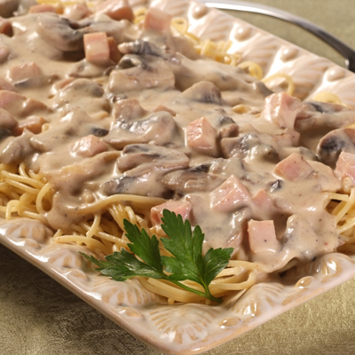

Caruso souce

Ingredients:
- Cream
- Ham
- Cheese
- Beef extract
- Mushrooms
Repice steps
- In a wide pot, melt butter over medium heat.
Add the mushrooms and cook, stirring occasionally,
until softened and most of the water has evaporated.
- Stir in the flour until incorporated and it begins to turn golden.
Slowly whisk in the milk
- then the cream and beef bouillon.
Continue to whisk until the sauce begins to thicken.
- Remove from heat and stir in the Parmesan cheese and ham
- Season to taste with salt, pepper, and nutmeg.
- Serve immediately with cooked pasta and freshly chopped parsley for garnish.
Back